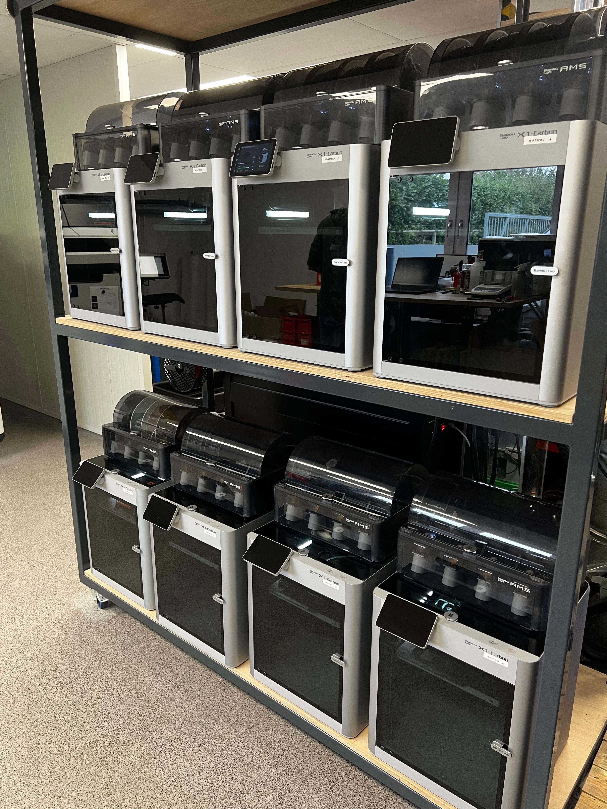
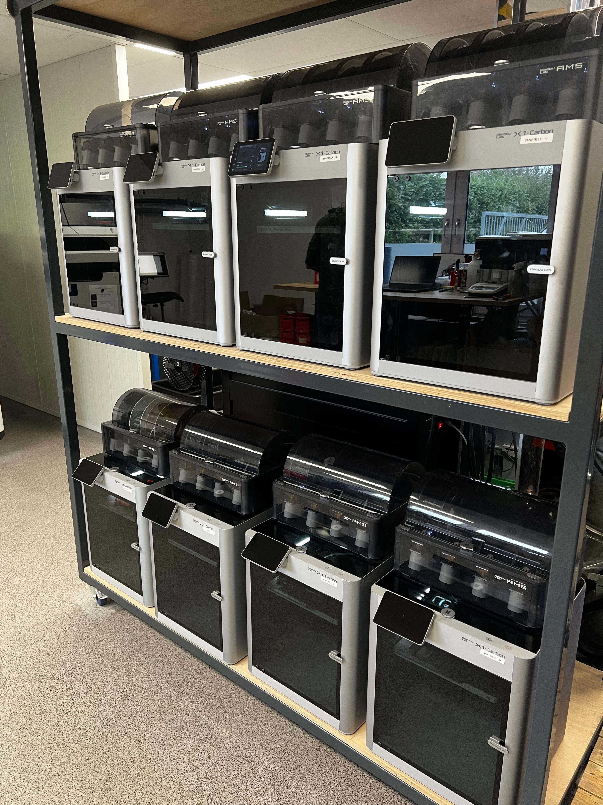

Ontwikkeling - Smart Technology
De minor Smart Technology was voor mij de meest waardevolle stap in mijn technische ontwikkeling. Tijdens deze minor heb ik vanuit het niets een compleet IoT-systeem gebouwd, inclusief bijbehorende middelen.
Het proces begon met het testen van een ESP32 in combinatie met een ontwikkelbord. Hoewel ik aanvankelijk weinig kennis had over dit onderwerp, leerde ik stap voor stap hoe het werkte. Nu kan ik met gemak uitleggen hoe mijn systeem functioneert. Het maken van fouten en het iteratief verbeteren daarvan was cruciaal voor mijn leerproces en persoonlijke groei.
Tijdens het project heb ik diverse vaardigheden ontwikkeld, waaronder het schrijven van code voor mijn systeem, het ontwerpen van een 3D-behuizing, het schetsen van een PCB-bord, het laten produceren van dit bord, en het solderen van de circuits met pinnen. Dit praktische aspect was een van de redenen waarom ik voor deze minor heb gekozen. Het bood een unieke hands-on ervaring die afweek van mijn studie HBO-ICT en waar ik enorm van heb genoten. De opgedane kennis en ervaring kan ik nu toepassen naast mijn studie.
Helaas kon ik de specifieke kennis uit dit IoT-project niet direct toepassen op mijn hoofdproject, omdat dat zich op een ander onderwerp richtte. Toch leverde dit mij waardevolle inzichten op. Het proces heeft mijn analytisch denkvermogen versterkt en mij geholpen probleemoplossend te werken.
De lessen over AI hebben mijn begrip van dit vakgebied aanzienlijk vergroot.
Dit bleek zeer relevant voor mijn project bij Mprise Agriware, waar ik heb gewerkt aan AI-oplossingen voor documentatiegeneratie. Voorafgaand aan dit project had ik weinig kennis van AI, maar dankzij deze lessen begrijp ik nu beter hoe het werkt en hoe ik het kan toepassen.
Het werken in SolidWorks voor 3D-ontwerp was de grootste uitdaging. Ik heb er talloze uren in geïnvesteerd om oplossingen te vinden, maar uiteindelijk is het me gelukt om mijn doel te bereiken. Deze ervaring heeft mijn kennis op dit gebied sterk vergroot, waardoor ik in de toekomst zelfverzekerd nieuwe 3D-designs kan maken met SolidWorks.
Een andere waardevolle toevoeging waren de workshops en bedrijfsbezoeken.
Deze gaven me inzicht in het werkveld en de systemen waarmee we werkten. Zo hebben we een bezoek gebracht aan Your Plastic Solutions, waar we meer leerden over 3D-printing, en aan de Meshallen-fabriek in Wijchen. Deze ervaringen boden niet alleen technische inzichten, maar ook kennis over de zakelijke aspecten van deze systemen.
Tot slot heb ik mijn IoT-systeem volledig gerealiseerd en werkend gekregen, inclusief een koppeling met een InfluxDatabase (zie video). Dit project heeft mij niet alleen technische vaardigheden bijgebracht, maar ook het vertrouwen om in de toekomst complexe technische uitdagingen aan te gaan.
 
